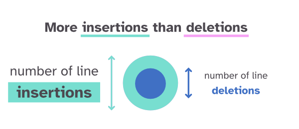
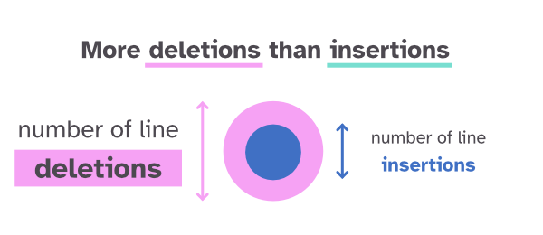
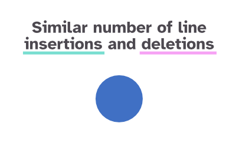
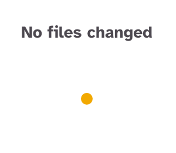
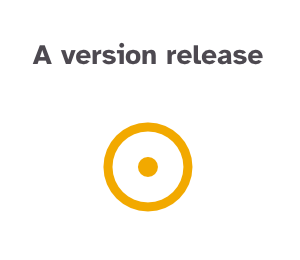

Commit history of …
The … repository has been shaped by its contributors since the first commit. The visualisation below shows all commits on its default branch since then.
Each commit is a small circle, grouped by the month it was committed. Quiet months are small clusters; busy months grow into large ones.
Commits by highlighted contributors are drawn as hexagons. In this dataset those are ….
Hover over a circle for the commit's details and to light up every other commit by the same author (matched on author name). Click a circle to keep that author's commits highlighted; click anywhere else to reset. Below the visual you can search for a contributor by name.
HOW TO READ THIS VISUAL




⏺ Note | Size does not scale completely linearly with the number of lines changed ⏺

Crunching all the commits...
NO DATA YET
commit-history collect --org <organisation> --output site/dataauthor
committed on
February 7, 2024
release
v4.7.09
changes made
3 files changed
468 insertions (+) / 263 deletions (-)
commit hash
Search for a contributor
REPOSITORIES IN …
DATA DETAILS
How the data was collected
Only commits reachable from each repository's default branch are included, newest first, which is also what git log walks. Merge commits are drawn as small yellow circles with no line changes, exactly as git log --shortstat reports them, so a pull request merged without squashing counts its lines once, on the individual commits.
Things to keep in mind
Author names come straight from the commits. The same person can appear under several names or emails, and hovering highlights by author name only.
A commit is drawn as a release when one of its tags contains v followed by a digit, the rule the visual applies. Tags such as 1.2.0 are listed in the tooltip but not ringed.
Line counts come from GitHub, which may leave the number of changed files blank for very large commits; such commits keep their line counts but show no file count.
The raw data for the dataset on screen can be downloaded below as CSV.
Visualisation designed & created by Nadieh Bremer | Visual Cinnamon,
published as ORCA commit history under the MPL-2.0 and used here with two additions from its own to-do list: a fade on hover and an animated re-pack.
Organisation page, data collector and workflow: this repository. Third-party notices.